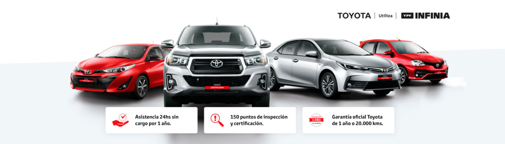
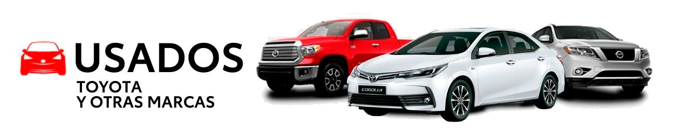

USADOS AUTOLUX
USADOS CERTIFICADOS TOYOTA
Somos los primeros en confiar en nuestros vehículos, por eso ofrecemos la mejor garantía para asegurar que la experiencia de uso sea única. Nuestros vehículos Toyota cero kilómetro comercializados y entregados a partir del 1 de septiembre de 2018, gozan de una garantía sobre el vehículo por 5 años o 150.000 km (lo que ocurra primero). Nuestros vehículos híbridos cuentan con una garantía de 8 años o 160.000km sobre los componentes del sistema: batería híbrida, inversor-convertidor y unidad electrónica de control.

Somos los primeros en confiar en nuestros vehículos, por eso ofrecemos la mejor garantía para asegurar que la experiencia de uso sea única. Nuestros vehículos Toyota cero kilómetro comercializados y entregados a partir del 1 de septiembre de 2018, gozan de una garantía sobre el vehículo por 5 años o 150.000 km (lo que ocurra primero). Nuestros vehículos híbridos cuentan con una garantía de 8 años o 160.000km sobre los componentes del sistema: batería híbrida, inversor-convertidor y unidad electrónica de control.